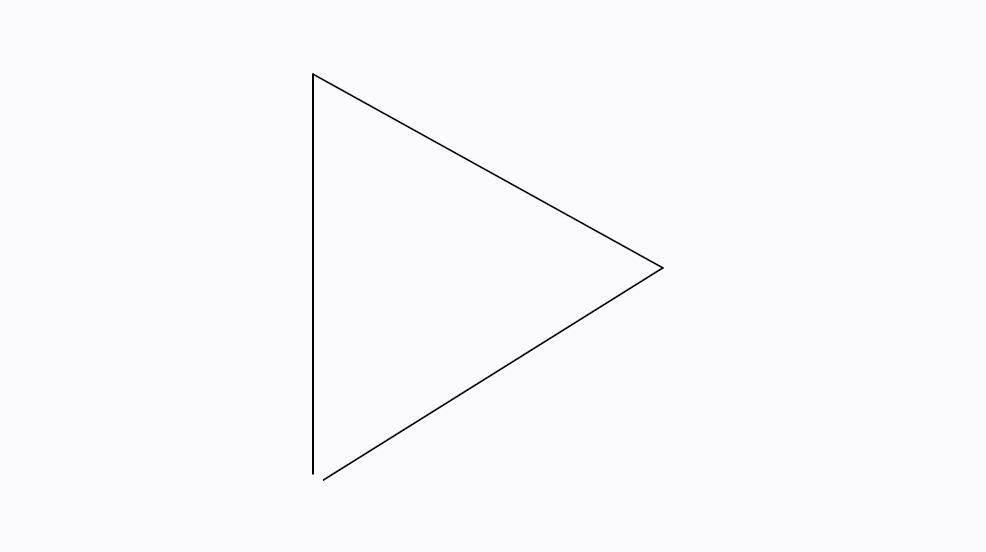
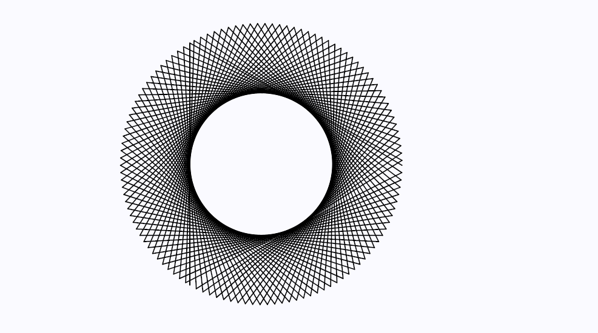
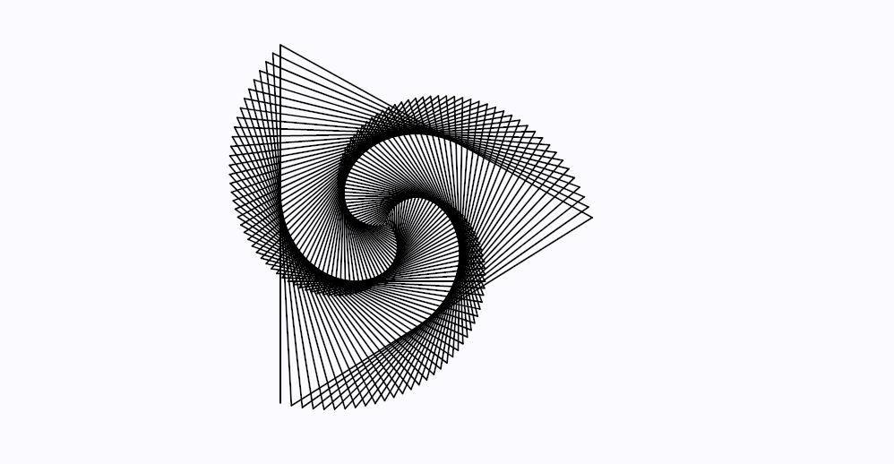
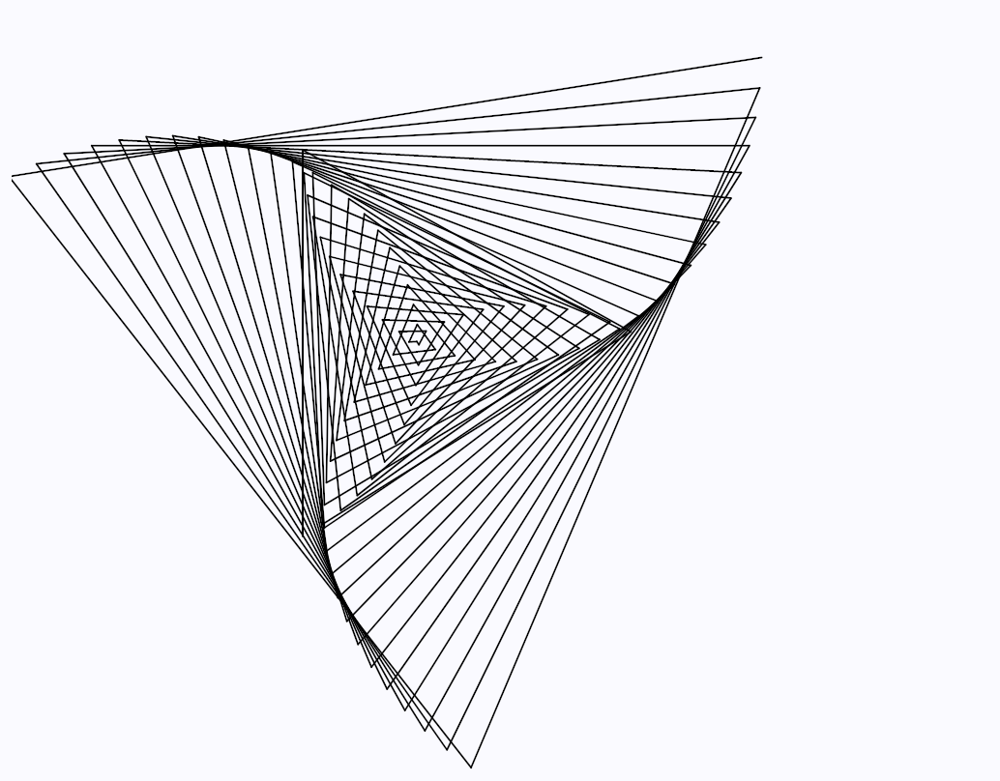

Change the shape by pressing 1, 2, or 3
How it works
To make this I will start by implementing turlte graphics in p5. Using turtles to draw vectors is intuitive and simple to implement in Javascript. You can read the Wikipedia page for more information on how they work. Put simply, a turtle is a single point on the screen with a directional heading in degrees. You can tell the turtle to move forward some length and draw a line as it moves. You can also tell the turtle to turn left or turn right a certain angle. You can keep moving and turning it and moving and turning until you have a nice little image.

So let's start by creating a simple turtle class.
class Turtle {
constructor(x, y, heading) {
this.x = x;
this.y = y;
this.heading = heading; // Heading in degrees
}
};
We have a turtle that has an (x,y) coordinate and a heading. Now we need to be able to make it turn left and right. I'm also going to add a function to manually set the heading.
class Turtle {
constructor(x, y, heading) {
this.x = x;
this.y = y;
this.heading = heading; // Heading in degrees
}
right(angle) { // Increase heading angle
this.heading += angle;
}
left(angle) { // Decrease heading angle
this.heading -= angle;
}
setHeading(newHeading) {
this.heading = newHeading;
}
};
In order to get the turtle to move, we need to first convert our turtle's coordinates from polar to cartesian. We'll have to do some trigonometry for this. Lucky for us, p5 has some handy built-in functions to do the calculations. But first, let's take a look at a unit circle to figure out how we will go about doing this.

So we know if we have an angle t, we can take the cosine and sine of it to get our new x and y values respectively. These (x,y) coordinates would only be on the unit circle of radius = 1. We'll have to multiply each these values by the scalar length we are moving the turtle. But this angle t is in radians and our heading is in degrees. Good thing for us, p5 has a radians() function to convert from degrees to radians, and sin() and cos() functions to calculate the sine and cosine.
class Turtle {
...
forward(length) {
// (x1,y1) will be the new coordinate
var x1 = this.x + length * cos(radians(this.heading));
var y1 = this.y + length * sin(radians(this.heading));
// draw a line from the current coordinates to the new coordinates
line(this.x, this.y, x1, y1);
// update turtle's position
this.x = x1;
this.y = y1;
}
}
Now that we have a turtle, lets work on the spirograph. I always like to break down problems into it's simplest pieces. Let's use our turtle to draw an equilateral triangle. Equilateral triangles have three sides with equal length and an internal angle of 60°. But if you try to get a turtle to (move unit length, turn right 60°) x 3 you will get something like this..

We're going to need the turtle to turn (180 - internalAngle) degrees instead to be able to produce the output we want. This should make sense since turning the turtle 180 degrees would reverse the turtle's direction.
Cool, we have an enclosed triangle now. But we don't really want an enclosed triangle for the spirograph. So if instead we use an internal angle of 61° we'll get this output...
Now if we draw this same triangle a bunch more times...
Alright, neat. Now it looks like our triangle is rotating around a central point. But in order to get that spirograph look, we need to shorten the length of each side at every turn. We can make a function called
drawLineAndTurn(sideLength, internalAngle) {...}sideLength and turns the turtle according to internalAngle.
We can keep the internal angle the same for now, but we'll want to reduce the side length for every step until it's down to zero length. This can be done using a for loop that iterates from zero to some initial side length. We can call drawLineAndTurn() but have sideLength get smaller for each iteration in the for loop. That can look something like this...
for(var i = 0; i < initialLength; i++) {
drawLineAndTurn(initialLength - i, internalAngle);
}
Let's run that and see what we get.
Awesome! Exactly what we wanted, and pretty simple too. Now it's time to experiment! Experimenting is the fun part of programming. Mess around with the colors, or the amount you decrement the side length (maybe depending on the x position of the mouse, ooh!), or the internal angle, or anything. Change everything until you find something cool. Here, I accidentally made this cool little image while writing this post. See if you can figure out how to do it too. Or make something entirely new.
